LumiHue er en online app til Philips Hue med avancerede opsætningsmuligheder. Log ind med din Hue-konto, og arbejd med dit lys fra browseren.
- Rum og zoner giver overblik med nem adgang til at ændre navne og opsætning.
- Adaptiv sensorstyring gør livet med sensorstyret lys enklere.
- Opsætningen ligger på broen. Lysstyring og automatik gemmes på Hue Bridge, så alt virker, også når LumiHue er lukket.
- Sonar og live-feedback logger alle data fra sensorer og viser broens hændelser, mens de sker. Kræver lokal installation og kommer efter første beta.
Private Beta Soon